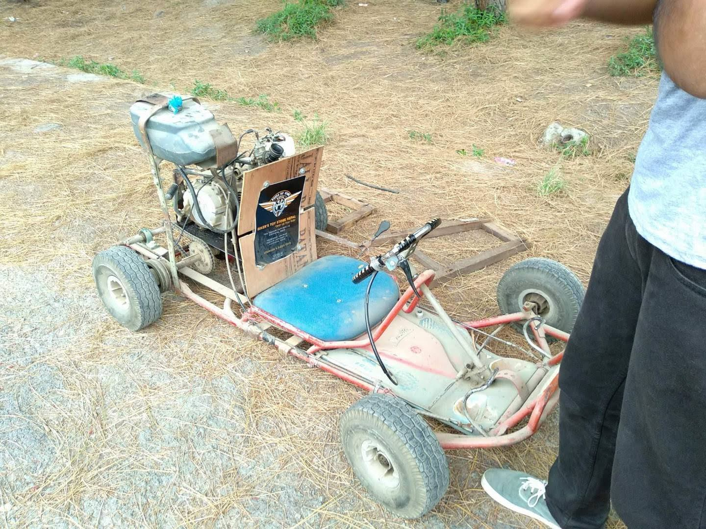

Engine replacement
Replacement of the existing generator engine with a spark-ignition engine as the central modification to the go-kart.
Undergraduate automotive engineering project
Engine modification, mechanical integration, and assembly of an existing go-kart. This project connects workshop engineering with a practical vehicle demonstration.
Engine replacement · Spark-ignition engine · Mechanical integration · Vehicle assembly

The assembled go-kart during an outdoor driving demonstration, documenting the practical application of the engine modification and mechanical integration work.
View original photograph →Project background
This automotive engineering project involved modifying an existing go-kart by replacing its generator engine with a spark-ignition engine. The work focused on integrating the replacement engine with the existing vehicle and assembling its mechanical components.
The photographs document the go-kart in the workshop, its exposed component layout outdoors, and a driving demonstration. They show the relationship between the chassis, driver’s seat, steering arrangement, and rear-mounted engine.
Replacement of the existing generator engine with a spark-ignition engine as the central modification to the go-kart.
Integration of the engine and associated mechanical components within the existing go-kart layout.
An outdoor driving demonstration documenting the assembled go-kart in use.
The photographs show the engine, frame, steering arrangement, and seating within the existing go-kart. Select a photograph to view the original in this tab.

The go-kart in the workshop with its engine and mechanical components exposed. This view shows the arrangement of the driver’s seat, steering, and engine within the existing frame.
View original photograph →
An outdoor view of the vehicle showing the exposed chassis, seating position, steering arrangement, rear-mounted engine, and fuel tank.
View original photograph →